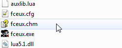
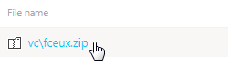
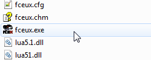

Содержание
Здесь описаны настройки для базового ромхакинга.
Для получения информации по другим настройкам и возможностям эмулятора обратись к онлайн справке, или читай ее офлайн в файле fceux.chm, когда скачаешь эмулятор.

Обе версии справки на английском языке.
Скачай свежую сборку эмулятора.

Эта сборка содержит в себе множество полезных изменений и багфиксов, в отличие от версии 2.2.3 на официальном сайте.
Все статьи написаны с учетом того, что у тебя тоже есть эта сборка.
Если у тебя уже есть FCEUX, достань из архива файл fceux.exe и замени у себя в корневой папке.

После обновления твои настройки останутся без изменений. Они хранятся в файле fceux.cfg.